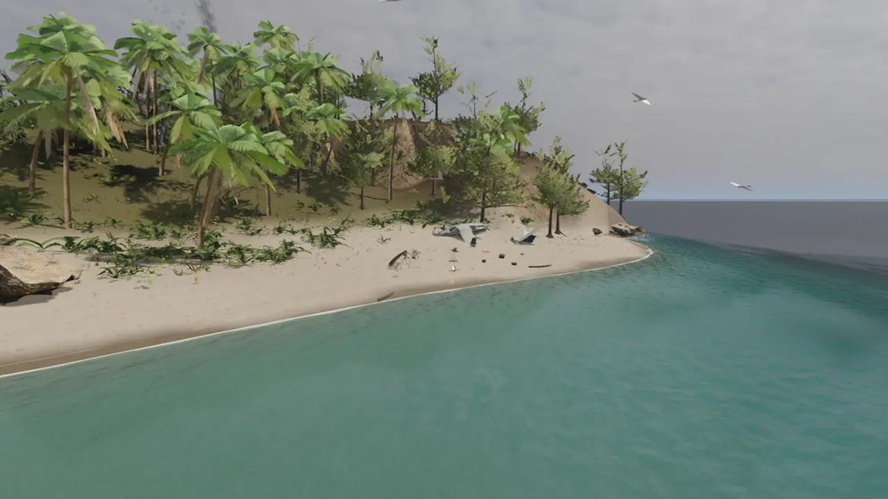
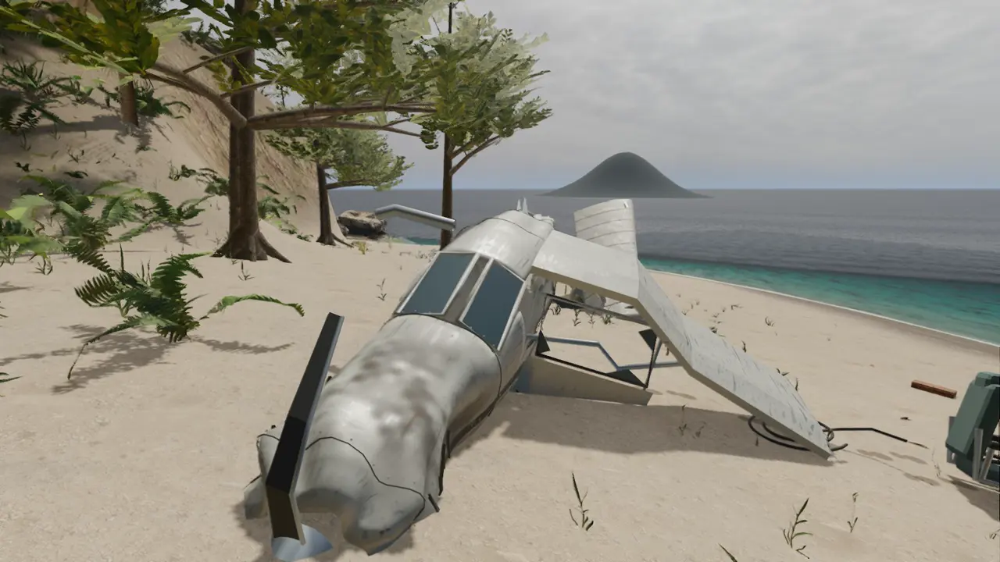
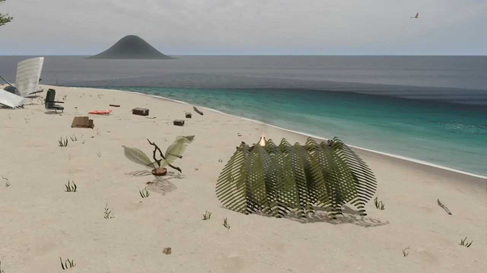
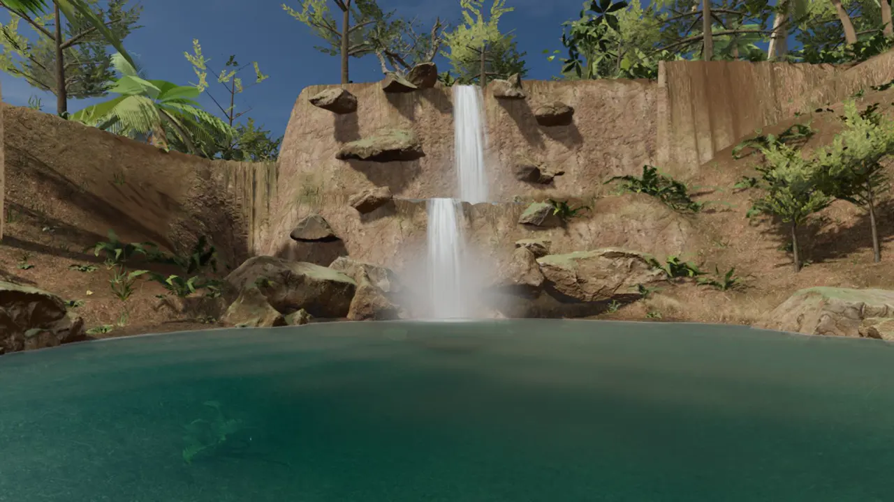
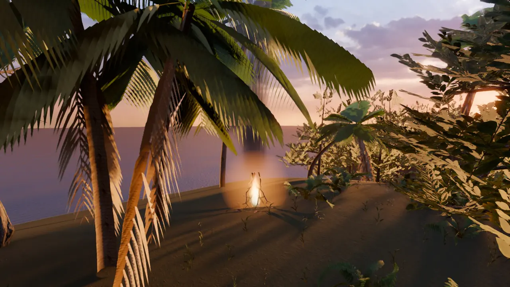

Issız Ada
Sevdiğim biriyle, iki ayrı bilgisayardan birlikte oynayabileceğimiz bir oyun istedim.
İki kişilik, sakin bir hayatta kalma oyunu. Uçak adaya düşer; enkazı toplar, barınak kurar, ateş yakarsınız. Sabahtan geceye her saat kendi ışığıyla akar.
Çok erken aşamada. Godot ile geliştiriliyor.
Geliştirme günlüğü 1'i izle




Sabahtan geceye, her saat kendi ışığıyla akıyor.
Geceleri şelaleyi ateş böcekleri sarıyor.
Threnos ve Fenrir
Çalışma adı
Threnos bir ağıt büyüsü: açtığı alanda ölen düşmanların ruhu yükselir, büyücüyü ve Fenrir'i iyileştirir.
Karanlık, zindan ağırlıklı bir aksiyon-RPG. Zırhlı bir savaş büyücüsü ve yoldaşı kurt Fenrir. Büyü, zırhlı eldivenlerinden çıkar.
Prototip aşamasında. Unreal Engine 5 ile deneniyor, motor kararı kesin değil. Hedef PC. Henüz gösterecek görüntü yok.
Gelişimini YouTube'da izle